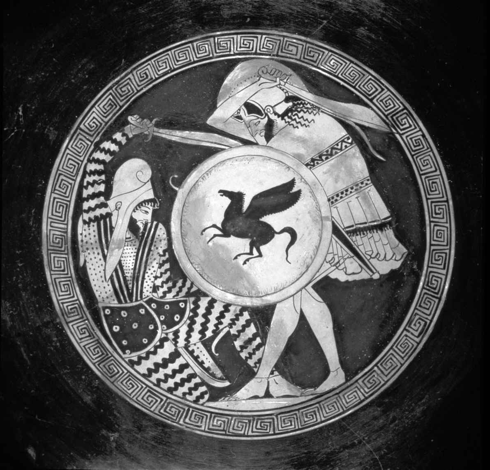

本章将考察希腊人和罗马人如何构想和撰写他们自己的过去。我们将看到，由于对过去的考察历来会受到当前的影响，因此历史学家的著作对于他或她自己所处时代的披露一点儿也不亚于其他时代。我们也会考察其他文类（例如史诗、悲剧和演说）对历史编撰的影响，以及古代作家在何种程度上进行我们认可的历史研究，而不单单是改写早期作家关于过去的版本。我们还会看到各个历史学家如何捍卫各自声称的真相，以及历史发现的过程如何旨在解释很多不同的事情——比方说，波利比阿是为了解释罗马共和国的兴起，而撒路斯特和塔西佗则是在解释共和国的消亡。虽然以历史准确性或客观性的现代标准来看，它们各有缺陷，但本章还将论证古代历史学家的伟大成就，其中很多人成功地收集了不少冷僻的资料，并将其整理成为复杂事件的连贯叙事。
撰史，即“历史”撰写，定义是对过去进行科学的（也就是基于证据的）调查，于公元前5世纪在希腊发展起来。然而正如我们在前几章所见，我们可以（谨慎地）把史诗或抒情诗等无文字记载的文学作为早期希腊历史的一种指南。在希腊人自己看来，荷马史诗就是撰史的绝佳典范，因为它们叙述了其社会的英雄本源，即便如希罗多德和修昔底德这样开拓性的历史学家，也会把荷马当作早期希腊文化的一个宝贵的信息来源，要知道这两位对早期的（神话的）过往叙事都持相对怀疑的态度，特别是由诗人讲述的叙事，在他们看来更不可信。不管是希腊还是罗马的历史学家都不得不参考史诗，一个重要原因就是，他们写作的素材非常相似：伟大的战争和英勇的行为、糟糕的决定和悲惨的失败、幸存与复兴。的确，从一开始，历史就从其他各种文类中汲取了不少养分，从所有形式的诗歌到哲学和包括地理与民族志在内的科学。
我们在早期历史学家那里已经看到了神话时代不同于历史时代的观念，以及历史学家应该关注后者，因为只有在历史时代，他才能够核对证据。然而神话和历史之间并没有清晰的界限，因为人们仍然严肃地相信自己与神话过往不可分割，比方说，他们仍然吹嘘自己的城市是由某个神话英雄建造的，或者贵族家庭仍然声称自己是那些英雄的后代。尽管如此，最早的历史学家还是采取了与神话截然对立的立场，因此，希罗多德强调自己关注历史时代，而修昔底德认为希罗多德及其前辈们对过去的神话或诗化叙述所持的怀疑态度都不够，并由此提升了他自己标榜的准确性和客观性。
有作品存世的最早的历史学家是希罗多德，他继承并参与了起源于公元前6世纪伊奥尼亚（现代土耳其的西海岸）的希腊各城邦的一场理性革命，在那场革命中，思想家们开始用科学的方法考察自然世界，并开始以怀疑的态度调查现有的传统，包括一代代传承下来的对过去的叙述。赫卡塔埃乌斯在《族谱》一书的开头就明确表达了这种对过去的批判性态度：“米利都的赫卡塔埃乌斯如是说——我写下这些文字是基于自己认定的真相。因为在我看来，希腊人的传说不计其数，荒诞不经。”（片段1）
希罗多德常常因为轻信而受到批评，但他很清楚，自己的任务是尽可能找到最真实的资料并加以权衡比较，而不是单纯地将一切信以为真：“我的职责是报道我所听说的一切，但我并没有义务相信其中的每一件事情。——对于我的整个这部历史来说，这个评论都是适用的。”（7.152） [1] 希罗多德称自己的著作为“historiē ”，意思就是“调查”和“研究”，这个名词本身就突出了他作为调查者的个人身份：因此他整部著作都强调游历（他提到自己曾在希腊各地调查，这不足为奇，但他也去过意大利、埃及、俄罗斯南部、黎巴嫩，甚至幼发拉底河流域的巴比伦），与当地的专家聊天（如有必要会通过翻译），也亲自去察看风土民情（实地勘察）。
无论在古代还是现代，都有一些评论家受到修昔底德的影响，认为希罗多德愿意讲述那些不可思议和荒诞不经之事，这损害了他自称为真正的历史学家的可信度，但把科学历史学家与轻信的说书人（甚至说谎者）二元对立的做法太过简单粗暴。我们最好能认识到，希罗多德把辛苦的实证考察和理性分析相结合，本身已经是了不起的成就，特别是有鉴于当时初露头角的历史学家所能获得的资料极其有限，游历也危险重重。“历史之父”这一称号，希罗多德当之无愧。
希罗多德开宗明义的第一句话，就阐明了《历史》一书的范围和目标：
（1.1） [2]
“展示”（display）一词提醒我们，希罗多德和诗人一样，是对着希腊观众诵读自己的作品的（我们大概会更新这个词，说“以下所发表的……”）。 [3] 他的中心研究课题是希腊人和野蛮人之间的战争（即我们所谓的希波战争，公元前490—前479年），但他立即认可战争双方的伟大成就，以及把他们的记忆保存下来（另一个史诗主题）的重要意义。卷一至卷五跟踪记录了波斯帝国的扩张，高潮是波斯两次入侵希腊，第一次由国王大流士领兵入侵（第六卷），公元前490年在马拉松惨败；第二次发生在公元前480—前479年，由大流士的儿子和继承人薛西斯一世领兵（第七至第九卷），入侵的规模大得多，最著名的战役包括陆地上的温泉关和普拉提亚战役，以及萨拉米斯海战。
在整部《历史》中，希罗多德使用了某些基本的解释模式，它们不仅让他庞大芜杂的叙事有了统一性，还宣传了他的作品的普遍适用性和重要价值。或许最基本的就是接替原则，也就是“人类的幸福从来不会长久驻留于一个地方”（1.5） [4] 这一观念，希罗多德首先指出了曾经弱小的城邦如今变得强大，而曾经不可一世的城邦如今变得弱小（1.5）。第二个原则是傲睨神明必遭惩罚，最明显的例子就是无数希腊暴君和野蛮国王因行为过激而遭遇惨败，从卷一的吕底亚国王克洛伊索斯——愚蠢的野心导致他忽略了德尔斐神谕模棱两可的含义，神谕回答他说：“如果克洛伊索斯进攻波斯人，他就可以摧毁一个大帝国” [5] （1.53——事实证明他摧毁了自己的帝国）——一直到愤怒的薛西斯因为自己所建的桥梁被海上的风暴所摧毁，下令痛笞赫勒斯滂海峡，并把一副脚镣抛入海峡之中，还吩咐烙刑吏给赫勒斯滂加上烙印（7.53）。最后，希罗多德在历代统治者和民族的兴衰中看到了一种基本的相互关系模式，也就是“以德报德”“以怨报怨”，这种模式不仅推动了变化（成为互相做出正面或负面反应的动因），也因为这是众神支持的，从而建立了一种普遍的秩序感。
希罗多德在地中海沿岸各地及更远的地方游历之时，亲眼见到了形形色色的社会，它们有着各种各样的风俗律法（希腊语中的“nomoi ”一词就包括“风俗”和“律法”两个意思），他非常敏锐地观察到，每个人都认为自己的文化是最优秀的（3.38）。既然意识到了风俗律法的多样性，希罗多德便十分谨慎，以免不尊重其他民族的律法和风俗，但这并未让他成为现代意义上的文化相对论者，拒不对文化发表看法，因为他也认为某些生活方式优于其他。他在分析希腊城邦联盟何以打败波斯帝国的强大军力时，就最有力地表达了这一点。因为风俗不光是文明生活的证据，也决定了一种文化的潜力，希罗多德认为，希腊的自由生活方式优于波斯的专制生活方式，这是希腊能够取得重大胜利的根本原因（见图5）。

图5 一只雅典红彩酒杯的内壁，由画家特里普托勒摩斯于公元前480年前后所绘，画面是一名希腊装甲步兵打败了一名波斯武士。注意波斯人的异族服饰（身穿条纹长裤），在古希腊观者看来，这样的服饰大概会显得颓废而古怪
这倒不是说希罗多德诋毁野蛮人——恰恰相反，以公元前5世纪希腊的标准来看，他有着异乎寻常的宽容和开明，并不认为东西方冲突是非黑即白的善恶之争，而把它看作一个有着不同文化价值观的谱系，其两端一边是专制，另一边是言论和行动自由以及法律面前人人平等。所以也会有贤明的外国统治者和糟糕的希腊统治者（暴君），但他分析希波战争隐含的结论，是希腊人为维护自由而战，而波斯试图实施独裁统治，希腊获胜是正义战胜了邪恶。在全书中有一处，希罗多德甚至让波斯人就君主政体、寡头政治和民主政体的相对优点展开了辩论（3.80—83），说明他们选择了专制政体，这个选择带来的结果是灾难性的，因为他们的统治者恰恰败于独掌全权的典型恶行，包括妄想症、反复无常、无视宗法和风俗、侵犯女人、谋杀政敌等。
希罗多德兴趣极为广泛，与他相反，修昔底德的关注面较窄，只探讨政治、战争和经济，这种倾向对后来认为的真正的历史研究产生了极大影响，至少到20世纪之前一直如此。20世纪后，人们才开始重新关注社会史，把（比方说）性别和宗教纳入研究范围，使得历史学科重新回到了更倾向于希罗多德的视角。修昔底德的研究课题是伯罗奔尼撒战争，这场发生于公元前431—前404年雅典和斯巴达之间的战争以雅典失败而告终。修昔底德来自雅典的一个富裕家庭，本人就曾在那场战争中担任将军，后因未能在布拉希达斯统帅的斯巴达大军压境时保住希腊北方城市安菲波利斯，于公元前424年被雅典人流放。修昔底德在书中记述了自己的失败和流放，但也自始至终强调布拉希达斯高超的领兵能力（言外之意，输给布拉希达斯并不能证明修昔底德不通兵法），还说遭到流放让他能够从交战双方处收集证据，并非坏事（5.26）。修昔底德遭到流放或许还让他对在雅典政治家及领袖伯里克利死后上位的大多数雅典政客和将军充满蔑视，修昔底德最欣赏伯里克利，可惜此人在公元前429年死于瘟疫。修昔底德活到了战争结束，却未能完成对那场战争的记录，全书在讨论公元前411年的大事时，一句话未完便戛然而止。虽说如此，从现存的八卷本中仍然能够看出修昔底德对这场战争的整体构想，包括雅典失败的原因，他对“现实政治”（Realpolitik ）阴谋和人在战争压力下的行为的分析，至今都是独一无二的。
修昔底德在古代就已经被尊为首屈一指的历史学家，现代人则称他是科学和客观历史学的创始人，他在著作的开篇段落便以这一形象示人，罗列出自己的研究方法，声称他对资料进行了准确彻底的考察，对历史原因有着深刻独到的见解，全然不同于前辈们粗制滥造的治史技巧。他们是“诗人”和“说书人”而非历史学家（1.21），（修昔底德声称）他们的目标是为了娱乐大众，而他自己的历史著作却是对过去的真正理解，有着永恒的价值：
（1.22） [6]
这一段落明确表示，修昔底德自信观众（或读者）会从他关于伯罗奔尼撒战争的历史中了解现实世界的规则。和史诗中一样，修昔底德笔下的战争也是人性的试验场，既表现了勇气、才智和坚韧不拔，也展示了自私、残酷和惨绝人寰。雅典人在公元前415—前413年试图入侵和占领西西里的后果是灾难性的，最终没有一位士兵逃过被杀或被奴役的结局，这就证明了一切战争都充满风险，如若过于自信，没有做到知己知彼，更是危险。武装冲突的恐怖在内战中尤为骇人，因为内战使一个社会内部反目为仇，这必将导致道德沦丧、社会崩溃。修昔底德对科西拉岛（如今的科孚岛）内战的记录，就对“人性”（这是修昔底德历史想象的一个关键元素）面对暴力和社会崩溃的压力作何反应做出了深刻的分析：
（3.82） [7]
正如他写到了战争的荣耀和残酷，修昔底德也分析了帝制的魅力和风险，他认为，帝制是人渴望权力和地位的必然结果。雅典人最为直言不讳地为他们的帝国辩白：“弱者应该屈服于强者，这是一个普遍的法则。”（1.76）修昔底德还写到了伯里克利本人曾为雅典大举征服其他希腊城邦和他们充满活力的帝国精神而自豪（2.64）。然而修昔底德也明确指出了帝国固有的危险和动荡，不光是因为它受到战争的不可预见性的影响，这是必须要赢得和维护的，也因为它会激起恐惧和妒忌，正如（修昔底德如此分析）雅典势力的扩张导致了斯巴达宣战。他还描绘了帝国的受害者，米洛斯岛试图保持中立就是一例：雅典人把岛上的男人悉数处死，把妇女和儿童掳来为奴。这个例子和其他类似事件都说明，人为了权力和优势而战或许是不可避免的，但权力一旦获得，也会被滥用。（米洛斯在公元前416年被毁之后，雅典紧接着就试图征服西西里而惨败，也是报应。）
修昔底德是一位保守的贵族，对民主心怀警惕：在提到公元前411年5 000位民选公民短期控制雅典城的寡头政治时，他说，“雅典人看起来国治家齐，至少在我有生之年，这倒是第一次”（8.97）。他让步说，当民主政治的领袖是一个人，即伯里克利时，它便可运作有序——“雅典在名义上是民主政治，但事实上权力是在第一公民手中”（2.65）——他认为伯里克利的继承者们破坏了这种人民与其优秀领袖之间的平衡，他们彼此争权夺利，目光短浅地诉诸民粹，在他看来，这些是导致雅典战败的主要原因。
然而虽然有着这样那样的偏见，修昔底德对领导力的分析仍然鞭辟入里：政治家需要智慧和远见，才能以良好的规划对意外情况（这是政治和战争的一个永恒特征）作出反应并避免灾难。所以，虽说我们应该抵制诱惑，不要把修昔底德关于公元前5世纪希腊历史的旷世之作当成权威，但必须承认，他的著作力求准确，并根据仔细观察（他是第一个为自己的时代撰写历史的人）、概率准则（所以，试举一例，他才能够重构出雅典将军在西西里决战之前会说些什么）以及对人的动机的全面但难免悲观的分析来解释历史，代表了历史编撰的巨大进步。
许多历史学家都曾在希腊化时期撰写历史（标准的现代版本罗列了850位历史学家），但没有完整的文本存世，不过其中最重要的人物波利比阿的著作却有很大一部分留存下来，他的主题是罗马在公元前220—前146年崛起，成为地中海世界的主要势力。在这段时期写作的历史学家中，没有谁能够无视罗马的大举扩张，波利比阿的目标乃是记录和解释罗马的成功。他既是为罗马人而写（罗马的政治精英都看得懂希腊语），也是为自己的希腊同胞而写，目的既是撰史也是说教，因为每一位读者都可以从他的记录中学到，是什么样的道德品质及何种政体促成了罗马的胜利。他有一整卷书（第六卷）都在记录罗马共和国及其政府机构，延续了希罗多德对不同政体（君主制、贵族/寡头政治和民主制）及其结果的关注，但希罗多德突出了君主政体的危险和民主的裨益，而波利比阿却认为罗马的三头政体利用了这三种政体形式的元素，是罗马获胜的主要原因，当然他还说，不可一世、所向披靡的罗马军队也必不可少。
不过值得一提的是，在罗马帝国发展的这一早期阶段，波利比阿就在自己的著作中强调了帝国成立后随之而来的腐败和堕落的危险（18.35, 31.25, 35.4）。罗马腐败和衰落的观念是罗马文学，特别是罗马历史编撰的一个主旋律。促成这种叙事的原因有好几个：罗马的权力异常庞大；罗马文化的传统性质强调“宗法”（mos maiorum ），对新生事物持怀疑态度；还有很重要的一点是，共和国因内战走向毁灭并沦为独裁。
希腊历史编撰对罗马人的影响巨大，第一位罗马本土历史学家法比乌斯· 皮克托写作的时间在公元前3世纪末，他甚至用希腊语写作，他早期的继承者们也是如此。第一位用拉丁语散文体撰写罗马历史的作家是老加图，我们曾在第一章讨论过他，说他支持脚踏实地的罗马风格，反对老于世故而过于精明的希腊人。老加图在公元前168年左右开始写他的《创始记》，前149年去世时，仍笔耕不辍。虽然只有片段存世，但我们已经能够在《创始记》中看到罗马历史编撰的许多独一无二的特征了。
第一，如书名所示，老加图的著作讲的是罗马和意大利“从一开始”直到他自己时代（老加图本人就是他故事中的一个人物）的故事，这成为广受罗马历史学家欢迎的形式，他们往往从传说中的埃涅阿斯到达意大利（法比乌斯· 皮克托和老加图就是这么写的），或者从罗慕路斯和雷穆斯在公元前753年建立罗马城之时开始讲。第二，关于早期罗马史的书面资料完全缺失，因此在写到这一时期时，老加图的依据是民间记忆和“历史神话”，并改写它们，以适应自己的时代。这并不是说罗马历史学家不追求真相——那显然一直是他们的理想，而且罗马历史学家们一直声称自己摆脱了偏见——但他们在寻找可靠资料，特别是早期资料时面临着巨大难题，也很少质疑先前历史著作的准确性，那通常是他们撰史的依据。因此对他们而言，撰史固然要在元老院的档案馆里长时间埋头苦读，也同样需要（在很多情况下是更需要）依赖诗歌和修辞。第三，老加图认为历史应该传授有用的教训，历史的道德和说教性质是罗马文化的突出特点。因此罗马历史学家往往会关注能够从过去的典型人物和事件中学到什么，不论那些人物是正是邪，事件是好是坏。与此相关，老加图还强调公共利益，他不单独讨论个别的执政官和指挥官，而是略过他们的个人功绩不提，转而强调他们为罗马所做的贡献。
第一位有完整著作存世的罗马历史学家是撒路斯特，他的《喀提林阴谋》和《朱古达战争》都写于公元前1世纪40年代末，采用了专论的形式，探讨近代史上的独立事件：罗马贵族喀提林于公元前63—前62年密谋颠覆共和国而败露，以及公元前110—前104年罗马与北非的努米底亚国王朱古达的战争。撒路斯特在两场斗争中看到了罗马统治精英中普遍存在且无可救药的腐败迹象，他们对财富和权力的痴迷正在腐蚀公共生活，导致他们（除了其他危险行为之外）误用了罗马军队（如在《朱古达》中），或利用穷人的铤而走险（如在《喀提林》中），来实现自己个人的野心。虽然他的作品有着相当先验图式的说教，但撒路斯特尖刻的文风和对罗马强权政治的清醒分析广受青睐，他对最深刻的罗马历史研究者塔西佗产生了巨大的影响。
撒路斯特曾在公元前1世纪40年代初在内战中为凯撒而战，碰巧，另外两部绝无仅有的从共和国时代完整留存至今的“历史”著作，就是凯撒本人的《高卢战记》和《内战记》。在七卷的《高卢战记》中，凯撒记述了他征服高卢的过程（公元前58—前51），包括在公元前55和前54年两次远征不列颠，第二次曾迫使赫特福德郡那些长发的游牧部落之王卡西维劳努斯向他进贡。凯撒把征服高卢描写为正义之战，是高卢各部落为了击退来自彼此或来自日耳曼侵略者的进攻主动要求他来的，以此来掩盖他的真正目的，即为了增加战斗资金（用于在罗马国内贿赂收买）和为不久后的政治斗争训练兵团。他关于内战的三卷本著作强调自己爱国、仁慈和渴望和平，说自己是共和国及其传统的保卫者，与元老院的政敌们刻画的危险革命者的形象截然相反。他通篇提到自己时都用第三人称（“得到这一消息，凯撒命令军队前进”等），创造了一种客观的姿态，但事实上却突出了自己的权威和韬略。
显然，凯撒的两部著作都更像宣传而非历史，但时至今日，我们仍然很难看到有哪一位将军或政治家的回忆录不用大量篇幅为自己辩白。这些文本或许受到了凯撒政治野心的影响，但仍然十分引人入胜，因为它们揭示了整个古代世界最有影响力的人物之一的战略战术，何况那还是欧洲历史上最动荡、最残酷的时期之一。凯撒平实直白的文风主要是为了诱惑读者相信他对那些事件的讲述是未经修饰的真相，却也让他成为数个世纪以来孩子们学习拉丁语的痛苦之源——要是他们还记得那些课本，就一定知道“高卢全境分为三部分……”（1.1）——现代人之所以认为罗马人冷酷无情、穷兵黩武，在很大程度上归结于此。
与撒路斯特和凯撒关注近代或当代历史的具体事件不同，李维那部142卷的浩瀚巨著——《建城以来史》，涵盖了从罗马的起源一直到公元前9年的整个罗马史。只有35卷留存了下来：1—10卷（公元前753—前293）以及第21—45卷（公元前218—前167）。李维对手头的材料采用逐年纪事的方法，越接近他自己的时代，涉及的细节越多，因为他有更多的文字资料可用：因而到第21卷，也就是罗马与汉尼拔交战之时（公元前218年），他已经写了足足500多年的历史。和波利比阿（李维的主要信源之一）一样，李维的目的也是要为罗马势力的扩张写一部编年史，并说明是何种德行和品质巩固了它的成功。李维在前言中明确指出历史研究的目的和价值：
（前言10） [8]
把历史写成各种正面和反面事例，听来着实单调无趣，而李维的说教性巨著并不乏味，这要多亏他是个讲故事的高手，能够创造出令人信服的人物和戏剧化的叙事。李维讲述的很多罗马历史故事都是他的读者非常熟悉的，从英雄主义到自我牺牲的著名片段（例如贺雷修斯· 科克勒斯守卫台伯河上的桥梁）到暴君的残酷行径（例如卢克雷提娅被强奸，导致君主制被废以及罗马共和国成立）——但它们在他的笔下充满悬念、引人入胜，罗马人喜欢他的戏剧化历史文风大概相当于我们喜欢阅读历史小说家希拉里· 曼特尔或威廉· 博伊德，而李维还有额外的功绩，他保存了很多历史细节，如若不然，它们早就佚失在历史的长河中了。
李维后来的著作没能保存下来真是巨大的遗憾，因为看看他怎么写奥古斯都及他自称共和国的复兴者一定十分令人着迷。有一点很清楚，那就是从共和制到元首制（principate）——princeps 意为“第一公民”，是表示皇帝的绝对权力的委婉语——的转变对历史撰写产生了深刻影响。在奥古斯都的继任者提比略的统治下，历史学家克莱穆提乌斯· 科尔都斯因为撰写了亲共和国的内战史而被控叛国罪：胆怯无能的元老院谴责克莱穆提乌斯，他的书被焚烧，而他本人绝食而死（公元25年）。相反，倾向于帝国的历史学家和道德家如维雷乌斯· 帕特库鲁斯和瓦勒里乌斯· 马克西姆斯的作品则毫不掩饰对提比略的谄媚奉承，他们对当权派的坚决支持也能解释为什么帝国体系能够维持那么长时间。不过所幸有一部对元首制的批判性记述保留了下来，它的作者是罗马有史以来最伟大的历史学家。
塔西佗于公元2世纪初在图拉真和哈德良的统治下撰写了自己的历史著作《历史》和《编年史》，但他很明智地没有写到当代史，到那时，这么做已经非常危险了，除非能够昧着良心阿谀奉承。相反，他的《历史》写的是公元69—96年这一段时期，从尼禄之死和“四帝之年”（加尔巴、奥托、维特里乌斯和韦帕芗）一直到专制的图密善之死。塔西佗描述了内战的混乱和另一个帝国王朝靠血腥杀戮的兴起：韦帕芗和他的两个儿子提图斯和图密善。但对帝国制度及其对皇帝和臣民两方面的影响最深入、最有批判性的描写却是在《编年史》中，它写于《历史》之后，涵盖的却是较早的朱里亚—克劳狄王朝时期，从提比略登基到尼禄自杀。
《编年史》现存的卷本中提到的三位皇帝，每一位都有着不可救药的缺陷：提比略奸诈虚伪、暴虐成性；克劳狄一世生性懦弱，妻子不贞，还是个学究；尼禄是个弑母的疯子，喜欢炫耀凭空想象出来的表演、唱歌和战车比赛天分。（遗憾的是，描写堕落而残暴的卡利古拉皇帝的卷本佚失了。）多亏了塔西佗，如今每当我们想起罗马帝国，眼前就会出现罗马被烧时，尼禄弹琴——或者更准确地说，和着里拉琴唱歌——的一幕（《编年史》15.39）。然而除了生动地为疯狂的独裁者画像之外，塔西佗也强烈指责了他的统治阶级同僚，认为正是他们的奴颜婢膝纵容了帝王的残暴任性。塔西佗一开头描述提比略登基时这些人作何反应的段落，就是整部作品的代表性内容：
（《编年史》1.7） [9]
他们如此没有骨气，连皇帝本人也感到恶心：
（《编年史》3.65） [10]
因此我们说，虽然塔西佗哀叹共和制自由的丧失（特别是对像他这样的元老院成员而言），他还没有天真到忘记了导致共和国崩溃的政治野心和派系斗争，他知道，如果随之而来的是内战，专制是不可避免的。然而正如“四帝之年”表明的，元首制本身并非不打内战的保证，帝制的罗马仍然饱受着导致其走向帝制的野心、腐败和暴力之苦。
在《编年史》开头，塔西佗提出了历史学家一贯的公正宣言，说他探讨奥古斯都以降的历代帝王时，“既不会心怀愤懑，也不会意存偏袒”（sine ira et studio , 1.1） [11] 。但他个人坚信元首制必会导致统治者和被统治者双方的堕落，这在他的整个叙事中时时有所体现。因而在古代历史学家中，塔西佗与希罗多德比肩而立，因为他有着深刻的认识和洞见，以此分析了专制政府形式对个人和社会两方面的破坏。他在后代撰史或生平传记中无人可比。因为只关注一个人，尤其是此人的性格和对权力的使用，生平传记成为帝国制度下备受欢迎的文类。塔西佗对那个帝国的回应不仅成为历史叙事的一部杰作，也证明了即便在政治镇压面前，真相也从未曾丧失过一丝一毫的力量和意义。
[1] 译文引自徐松岩译注，《历史》，中信出版社2013年版，第1258页。
[2] 译文引自徐松岩译注，《历史》，中信出版社2013年版，第101页。
[3] 需要说明的是，徐松岩先生对“display”一词的翻译就是“发表”，但译者考虑到作者在此处的解释，改成了更符合作者原意的“展示”。
[4] 译文引自徐松岩译注，《历史》，中信出版社2013年版，第106页。
[5] 同上书，第146页。
[6] 译文引自谢德风译，《伯罗奔尼撒战争史》（上册），商务印书馆1985年版，第18页。
[7] 译文引自谢德风译，《伯罗奔尼撒战争史》（上册），商务印书馆1985年版，第237页。
[8] 译文引自穆启乐译，《建城以来史》（前言· 卷一），上海人民出版社2005年版，第21页。
[9] 译文引自王以铸、崔妙因译，《塔西佗〈编年史〉》（上册），商务印书馆1981年版，第7页。
[10] 同上书，第186页。译文中的“提贝里乌斯”即提比略。
[11] 译文引自王以铸、崔妙因译，《塔西佗〈编年史〉》（上册），商务印书馆1981年版，第2页。